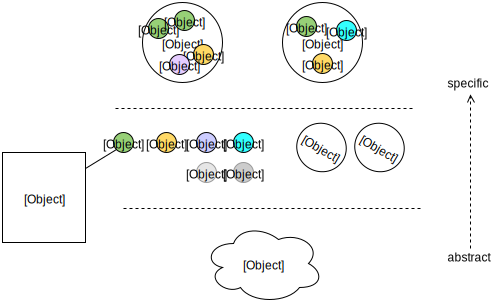
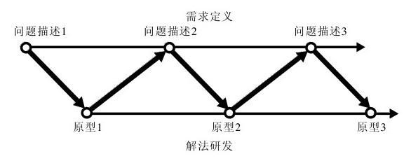

"活"的设计(Living Design, 简称LD)?
首先，产品是"活"的。多元时代，入囗多、需求变化快、又力图覆盖所有设备和平台、适应不同的使用环境...扩展和进化速度更快
要实现这样一个"活"的产品，依赖更专业的团队。它的产品实现价值更大，这也正是设计师x工程师共同的价值体现
- 未登录首页：2个版本
- 登录首页: 最多时6个版本
- 小组首页：最多时5个版本
- 广播类型全集：195种
- 提醒类型全集：67种
- 所有新功能都经过数据采集和灰度上线
- 产品实现的特点：展现形式多、新旧代码并存、业务逻辑复杂、迭代快、需求多变、向前兼容、覆盖移动设备
- 产品实现的挑战：系统的设计和更高机动性前端架构
So, "活"的产品需要"活"的设计
对"活"的理解
生命体基本特征的类比：
- 体内平衡 ············ 这种自动调节指适配性。适配内容变化(文字长度、图片尺寸)、屏幕等各种情况
- 组织性 ············ UI可解构为UI元素的系统构成(如原子设计、卡片设计)
- 新陈代谢 ············ 新的UI元素不断替代旧的元素。保持整体设计的活力
- 生长 ············ 从最小可用形态(MVP)，跟随需求、不断迭代、持续完善
- 适应性 ············ 能适应用户的使用环境(如响应式设计)
- 反应性 ············ 能响应用户的各种操作(mouse/keyboard/touch/voice/gesture)，反馈各种状态(错误、失效、等待、处理...)
- 繁殖 ············ 基于现有的生态体系，快速孵化新产品
定义：LD是由有组织的UI元素构成，能适应不同的使用环境，响应用户的行为，灵活适配内容、可扩展、可继承的设计。
LD的基本特征: 适配性、响应性、组织性、扩展性。
比较传统设计(契约-交付式设计，外包模式): 单一vs.多态，固定vs.变化，颠覆vs.进化
打破传统的产品实现流程
1.产品目标 > 2.设计问题 > 3.构思模型 > 4.设计实现(ID&VD) > 5.真实的产品
PM
PRD
Designer
设计稿
FE
模板
BE
上线
User
- 沉浸在各自的专业圈子里，自得其乐，交集越来越小。
- 人多不是协作，只是劳动密集型
- 只对上面负责
改进：让环节重叠，后面努力影响前面。但信息不均衡，沟通艰巨。陷入无休止的争论，挤占开发时间，牺牲细节
继续改进：回到产品实现的根基上，流程的SoC，产品实现"黑盒"。
LD的实现思路(2) - 系统设计
核心思想：解构和组合。简而言之，解构到信息元素的最小粒度，设定它的属性和行为，再根据结构关系(layout)和使用场景(page)组合起来。

- 形成系统的设计。提高实现效率
- 精确定位问题，避免颠覆性的解决思路。
传统的设计实现是把页面当成对象。常常为解决局部问题，整个页面改版。
- 前端代码是UI的最高抽象。解构和组合的思路是一致的
关键词：解构、组合、属性、行为、结构关系(layout)、使用场景(page)
例子:
如果简单按设计稿还原，会在开发最后阶段甚至上线后暴露出一些问题(有些时候可能颠覆设计)：
- 大多数时候商品名会很长拆行
- 真实图片的比例多样，现有缩略图的尺寸不符
- 左边button有的是链接，有的带交互
- 有些情况下没有评论内容
- 时间显示：一小时内?一天内？一年内？
设计师的设计思维: 解构、定义、组合
第1步，解构元素。提取出UI元素（哪些现有设计系统里有的，哪些是新的）：
设定单个元素的属性和行为。属性包括：尺寸、最大范围、行高、字号、颜色、字数长度、对齐方式。行为：操作说明。
设计的范围缩小到更小的粒度后，更容易发现细节。
提前暴露细节，一个细节对应一个技术问题，比如：
第2步，分解结构。设定区域(1~4)和区域间的关系：
结构和元素分离。当需求变更时，是调整结构解决还是替换元素解决。
第3步，组合。按照一定的间距、对齐关系组合起来。
第4步，代码实现。代码是最高抽象。从抽象到具体保持一致。
上半部分小结 - 面向设计师
提出一个观念："活"的设计(LD)
LD的概念和如何理解它
实现它的两个前提: 设计师和前端工程师之间的协作关系、重构传统的产品实现流程
LD的两个思路：迭代设计和系统设计
还原LD - 协作流程
案例分析: A项目(项目名称不便透露)的协作过程。
- PM写了一份简要的PRD，招集DesignerxEngineer review
- 根据产品目标，出wireframe，PMxDesigner之间review
- 最初的wireframe针对M1解决最主要的产品问题(MVP)
- FExBE搭出第一版原型带测试数据，简陋的样式，尽可能少写JS/CSS，流程是同步的，且完整
- 基于原型。VDxID开始设计，一块一块的进行
- 开发上，前期着重于架构(基于组件的思想)，后期根据陆续出来的Design一块块的更新
- 细化实现过程，不陷在一个复杂的设计实现里，分步实现
- M1上线前，设计已经开始M2的设计
- 好的协作：多种角色间，不断抛出问题，解决问题的过程
马赫的共同演化设计实现模型

还原LD - 组件化的静态文件管理系统(1)
把"细胞"们组织在一起，并顺利的"新陈代谢"(后期维护)
A项目中最复杂的其实是一个"button"

简单部署到任何场景(page)下：
<%include file="/widgets/btn_publish.html" args="gallery=gallery" />
内部：
<%block filter="collect_css">
/* 依赖的CSS */
${istatic('/css/ui/overlay.css')|n}
${istatic('/css/mod_publish.css')|n}
${istatic('/css/tips.css')|n}
...
</%block>
<%block filter="collect_js">
// 依赖的Javascript
Do.ready(function() {
${istatic('/js/upload_pic.js')|n}
});
</%block>
<script type="text/template" id="tmpl-publish-picture">
// 依赖的Javascript模板
</script>
% if request.user:
% if not gallery.is_member(request.user):
<a href="#" class="btn a_show_tips">发图</a>
${self.tips('只有xxx才能发图。')}
% else:
<a href="${url()}add_picture" class="btn btn-publish-picture">发图</a>
% endif
% else:
<a href="${url()}add_picture" class="btn a_show_login">发图</a>
% endif
还原LD - UI的组织性
CSS的结构化组织思想，参考OOCSS、SMACSS、BEM等。原则：取其精华，弃其糟粕。
A项目的CSS组织：兼容层 + 抽象UI层 + 组件层 ＋ 业务层
兼容层x抽象UI层
|-- libs.scss 基本的mixin库
|-- reset.scss 为这个应用订制的css reset(你会发现通用文件越来越难hold住全站，原则是拆解、定制)
组件层
|-- buttons.scss 通用UI元素－button
|-- font_icons.scss 通用UI元素－字体icon。适配性更强
|-- item.scss 通用UI元素－条目。
|-- progress_bar.css 通用UI元素－进度条
|-- tips.scss 通用UI元素－Tips
|-- list.scss 通用UI元素－列表
|-- layout_col2.scss 结构
|-- ui JS组件的样式文件
| |-- overlay.scss
| `-- tag_input.scss
业务层
|-- mod_create.scss 通用业务模块: mod_开头
|-- mod_edit_desc.scss
|-- mod_gallery_info.scss
|-- mod_gallery_intro.scss
|-- mod_gallery_list.scss
|-- mod_nav_list.scss
|-- mod_picture_list.scss
|-- mod_picture.scss
|-- mod_publish.scss
|-- mod_upload.scss
|-- member_list.scss 特定页面用到的业务代码
|-- user_profile_head.scss
`-- ui.scss 这个应用的全局css文件
还原LD - 响应式设计
响应式设计(Responsive Web Design, WD)不仅仅局限于响应屏幕。本质上更好适应用户的使用环境。
Sorry! 暂不支持你的浏览器，请用Chrome打开...